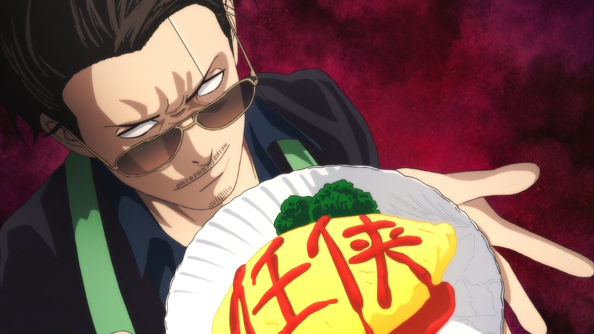

🕴️ MAFIOSO

Você não precisa de jutsus ou domínio de chakra quando tem a carteira cheia e pessoas dispostas a matar por ela. O Mafioso é o arquiteto do submundo que enriquece com a guerra e a desgraça dos outros.
Sua força não é medida em atributos físicos, mas sim em Yenes (Dinheiro Sujo) e Pontos de Infâmia (Seu Score). Todo mafioso inicia sua jornada com a Infâmia zerada e deve construir seu império do crime passo a passo.
Organizações Criminosas Ativas
 00_mafia_exemplo1.png
00_mafia_exemplo1.png
Família Yakusa do Fogo
Líder: Nome_Do_Player
Membros: Player_A, Player_B, Player_C, Player_D
Estrutura: Operam a partir do Cassino de Luxo no País do Fogo. Controlam as rotas de contrabando terrestre na fronteira oriental e possuem uma hierarquia rígida baseada em lealdade e pactos de sangue.
 00_mafia_exemplo2.png
00_mafia_exemplo2.png
Sindicato da Névoa Negra
Líder: Nome_Do_Player2
Membros: Player_X, Player_Y, Player_Z
Estrutura: Sediados em um Porto Comercial Privado. Especializados no tráfico marítimo de venenos e armas proibidas de Rank alto, estruturados em células independentes que dificultam investigações policiais.
ASCENSÃO CRIMINOSA E REPUTAÇÃO
Seu Rank de Infâmia dita o tamanho da sua influência, o medo que você gera nas ruas e o nível de recursos que você consegue mobilizar.
| Rank | Infâmia Necessária | Influência e Recursos Mobilizados |
|---|---|---|
| Rank E | 0 a 999 | Rato de Beco. O início de tudo. Focado em furtos pequenos, batedores de carteira e sobrevivência pura nas sombras das ruelas. |
| Rank D | 1.000 a 4.999 | Recruta. Começa a coordenar a extorsão de comerciantes civis locais. A Staff permite que você contrate os primeiros capangas NPCs fracos para intimidação. |
| Rank C | 5.000 a 14.999 | Chefe de Quadrilha. Já possui suas primeiras propriedades de fachada e monopoliza o mercado negro de pequenos itens ilegais na região. |
| Rank B | 15.000 a 34.999 | Subchefe. Centraliza redes de agiotagem em média escala e começa a financiar pequenos esquadrões de ninjas renegados. |
| Rank A | 35.000 a 79.999 | Don. Controle mafioso de nível regional. Políticos locais e samurais de fronteira começam a aceitar seus subornos e fechar os olhos para seus crimes. |
| Rank S | 80.000 a 149.999 | O Padrinho. A máfia se torna global. Grandes Clãs ninjas e organizações inteiras passam a depender do seu contrabando para sobrevivir às guerras. |
| Rank SS+ | 150.000+ | Imperador do Submundo. Você controla as cordas do continente. Pode subornar governos de Vilas Ocultas, fraudar leis feudais e colocar ou retirar recompensas milionárias no Bingo Book por puro capricho. |
TABELA DE ATIVIDADES E OPERAÇÕES LIVRES
O Mafioso possui total autonomia sobre o seu negócio. As atividades abaixo ficam permanentemente disponíveis para escolha de acordo com o seu Rank atual ou inferior. Os jogadores escolhem livremente as operações e conduzem as cenas em ON, sem necessidade de comandos da administração.
| Rank Mínimo | Tipo de Operação | Exemplo de Ação em ON (Livre Escolha) | Ganhos por Conclusão |
|---|---|---|---|
| Rank E / D | Pequenos Golpes | Furtos rápidos em feiras, contrabando de mercadoria civil comum e extorsão de feirantes NPCs. | 5.000 Yenes / +100 Infâmia |
| Rank C | Rotas Locais | Estabelecer rotas de contrabando pelas fronteiras, roubo de carregamentos comerciais e agiotagem local. | 20.000 Yenes / +500 Infâmia |
| Rank B / A | Tráfico de Elite | Tráfico internacional de venenos raros ou armas proibidas. Emprestar fortunas para players com juros altos. | 80.000 Yenes / +2.000 Infâmia |
| Rank S / SS+ | Crimes de Estado | Financiar sabotagens econômicas contra Vilas rivais, subornar autoridades de alto escalão e controlar o Mercado Negro. | 300.000 Yenes / +7.000 Infâmia |
MERCADO DE PROPRIEDADES E LAVAGEM DE DINHEIRO
A partir do Rank B, o Mafioso ganha permissão para comprar propriedades comerciais legítimas para lavar seu capital. A compra é feita diretamente com o sistema. Cada estabelecimento gera uma Renda Passiva Limpa paga semanalmente no OFF.
| Rank Mínimo | Estabelecimento | Custo de Compra | Renda Semanal (OFF) | Benefício Adicional em ON |
|---|---|---|---|---|
| Rank B | Taverna de Beira de Estrada | 100.000 Yenes | 10.000 Yenes | Excelente ponto de encontro para coletar boatos locais e fofocas sobre caravanas. |
| Rank B | Bordel ou Casa de Chá Oculta | 180.000 Yenes | 20.000 Yenes | Seus funcionários atuam como informantes discretos, dificultando que você seja pego de surpresa na região. |
| Rank A | Hotel e Estalagem Central | 350.000 Yenes | 45.000 Yenes | Permite hospedar seus capangas NPCs e players aliados em total segurança e sem chamar atenção das autoridades. |
| Rank A | Cassino de Luxo | 600.000 Yenes | 80.000 Yenes | O ápice do império. Atrai a nobreza e os Daimyōs. Dá o direito de organizar noites de jogos de azar reais com os players do servidor. |
| Rank S | Porto Comercial Privado | 1.500.000 Yenes | 200.000 Yenes | Zera qualquer chance de seus carregamentos e rotas de contrabando marítimo serem interceptados pelo sistema. |
REGRAS DE GESTÃO DE IMPÉRIO E MÃO DE OBRA
- O Limite de Fachadas Para manter o equilíbrio econômico do servidor, um Mafioso só pode possuir um número de propriedades igual ao seu Rank numérico (Rank B = 1 propriedade; Rank A = 2 propriedades; Rank S = 3 propriedades; Rank SS+ = 4 propriedades).
- Ataques e Sabotagem Players rivais ou forças da lei (como a ANBU) só podem fechar, invadir ou saquear um estabelecimento se realizarem uma investigação formal em ON que comprove o vínculo da propriedade com o crime, gerando um evento de defesa/ataque entre as facções. Se o estabelecimento for fechado pelas autoridades, o Mafioso perde a renda semanal até pagar uma taxa de suborno para reabri-lo.
-
A Mão de Obra: Quem não suja as mãos, paga
Um verdadeiro Mafioso não entra em combate direto se puder evitar. Emprega a terceirização da violência:
• Comprar NPCs (A Defesa): O Mafioso gasta seus Yenes diretamente com o sistema para adquirir guardas-costas genéricos armados, vigias de armazém e cães de guarda para proteger seus esconderijos de invasões e saques em ON.
• Contratar Players (O Ataque): Usa sua fortuna para pagar ninjas mercenários, Nukenins (renegados) ou Ronins para fazerem escolta de cargas, cobrarem dívidas de players inadimplentes com agressividade ou assassinarem rivais políticos.
MECÂNICAS DO SUBMUNDO: AGIOTAGEM E SUBORNO
1. O Sistema de Cobrança e Juros (Agiotagem): Quando um player estiver falido e precisar de Yenes com urgência, ele pode recorrer a um Mafioso Rank B+. O Mafioso dita o juro (ex: 30% de juro por semana) e assina o contrato em ON. Se o devedor não pagar na data estipulada no OFF, o Mafioso ganha o direito automático de colocar um contrato de captura ou assassinato no Mercado Negro usando o próprio sistema do jogo.
2. Corrupção e Compra de Silêncio (Suborno): Conforme o Mafioso sobe para o Rank A e S, ele passa a receber Fichas de Suborno semanais da administração. Ele pode gastar essas fichas para limpar a barra de seus capangas ou aliados. Se as forças da lei (ANBU/Polícia da Vila) prenderem um subordinado em flagrante, o Mafioso pode pagar um valor tabelado ao sistema para simular o suborno dos guardas, libertando o aliado da cela sem a necessidade de abrir um combate ou invasão.